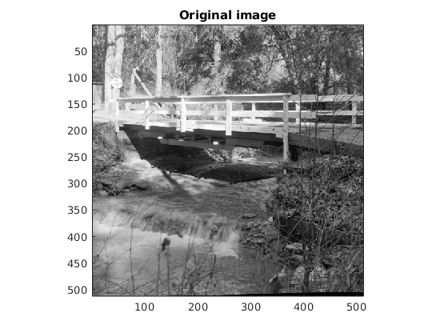

Contents
MyMainScript
tic;
Reading the images
img1 = imread('../../barbara256.png');
img1 = double(img1);
img2 = imread('../../stream.png');
img2 = double(img2);
Adding noise to the images
noisyImg1 = img1 + randn(size(img1)) * 20;
noisyImg2 = img2 + randn(size(img2)) * 20;
Image denoising using PCA (complete image)
denoisedImg1 = myPCADenoising1(noisyImg1, 20);
displayImage(img1, 'Original image');
displayImage(noisyImg1, 'Noisy image');
displayImage(denoisedImg1, 'Denoised image');
rmse = norm(denoisedImg1(:) - img1(:)) / norm(img1(:));
fprintf("RMSE for barbara256.png = %f\n", rmse);
denoisedImg1 = myPCADenoising1(noisyImg2, 20);
displayImage(img2, 'Original image');
displayImage(noisyImg2, 'Noisy image');
displayImage(denoisedImg1, 'Denoised image');
rmse = norm(denoisedImg1(:) - img2(:)) / norm(img2(:));
fprintf("RMSE for stream.png = %f\n", rmse);
RMSE for barbara256.png = 0.071640
RMSE for stream.png = 0.095245
Image denoising using PCA (nearest K = 200 patches)
denoisedImg2 = myPCADenoising2(noisyImg1, 20);
displayImage(img1, 'Original image');
displayImage(noisyImg1, 'Noisy image');
displayImage(denoisedImg2, 'Denoised image');
rmse = norm(denoisedImg2(:) - img1(:)) / norm(img1(:));
fprintf("RMSE for barbara256.png = %f\n", rmse);
denoisedImg2 = myPCADenoising2(noisyImg2, 20);
displayImage(img2, 'Original image');
displayImage(noisyImg2, 'Noisy image');
displayImage(denoisedImg2, 'Denoised image');
rmse = norm(denoisedImg2(:) - img2(:)) / norm(img2(:));
fprintf("RMSE for stream.png = %f\n", rmse);
RMSE for barbara256.png = 0.057208
RMSE for stream.png = 0.089741
Image denoising using Bilateral Filtering
denoisedImg3 = myBilateralFiltering(noisyImg1, 20, 10);
displayImage(img1, 'Original image');
displayImage(noisyImg1, 'Noisy image');
displayImage(denoisedImg3, 'Denoised image');
rmse = norm(denoisedImg3(:) - img1(:)) / norm(img1(:));
fprintf("RMSE for barbara256.png = %f\n", rmse);
denoisedImg3 = myBilateralFiltering(noisyImg2, 20, 10);
displayImage(img2, 'Original image');
displayImage(noisyImg2, 'Noisy image');
displayImage(denoisedImg3, 'Denoised image');
rmse = norm(denoisedImg3(:) - img2(:)) / norm(img2(:));
fprintf("RMSE for stream.png = %f\n", rmse);
RMSE for barbara256.png = 0.131553
RMSE for stream.png = 0.143425
Image denoising using Poisson distribution
noisyImg1 = poissrnd(img1);
denoisedImg4 = myPCADenoising2(sqrt(noisyImg1 + 3 / 8), 0.25);
denoisedImg4 = denoisedImg4.^2 - 3 / 8;
displayImage(img1, 'Original image');
displayImage(noisyImg1, 'Noisy image');
displayImage(denoisedImg4, 'Denoised image');
rmse = norm(denoisedImg4(:) - img1(:)) / norm(img1(:));
fprintf("RMSE for barbara256.png = %f\n", rmse);
noisyImg2 = poissrnd(img2);
denoisedImg4 = myPCADenoising2(sqrt(noisyImg2 + 3 / 8), 0.25);
denoisedImg4 = denoisedImg4.^2 - 3 / 8;
displayImage(img2, 'Original image');
displayImage(noisyImg2, 'Noisy image');
displayImage(denoisedImg4, 'Denoised image');
rmse = norm(denoisedImg4(:) - img2(:)) / norm(img2(:));
fprintf("RMSE for stream.png = %f\n", rmse);
noisyImg1 = poissrnd(img1 / 20);
denoisedImg5 = myPCADenoising2(sqrt(noisyImg1 + 3 / 8), 0.25);
denoisedImg5 = denoisedImg5.^2 - 3 / 8;
displayImage(img1, 'Original image');
displayImage(noisyImg1, 'Noisy image');
displayImage(denoisedImg5, 'Denoised image');
rmse = norm(denoisedImg5(:) - img1(:)) / norm(img1(:));
fprintf("RMSE for barbara256.png with low exposure = %f\n", rmse);
noisyImg2 = poissrnd(img2 / 20);
denoisedImg5 = myPCADenoising2(sqrt(noisyImg2 + 3 / 8), 0.25);
denoisedImg5 = denoisedImg5.^2 - 3 / 8;
displayImage(img2, 'Original image');
displayImage(noisyImg2, 'Noisy image');
displayImage(denoisedImg5, 'Denoised image');
rmse = norm(denoisedImg5(:) - img2(:)) / norm(img2(:));
fprintf("RMSE for stream.png with low exposure = %f\n", rmse);
RMSE for barbara256.png = 0.065712
RMSE for stream.png = 0.073208
RMSE for barbara256.png with low exposure = 0.951126
RMSE for stream.png with low exposure = 0.951416


EXPLANATIONS